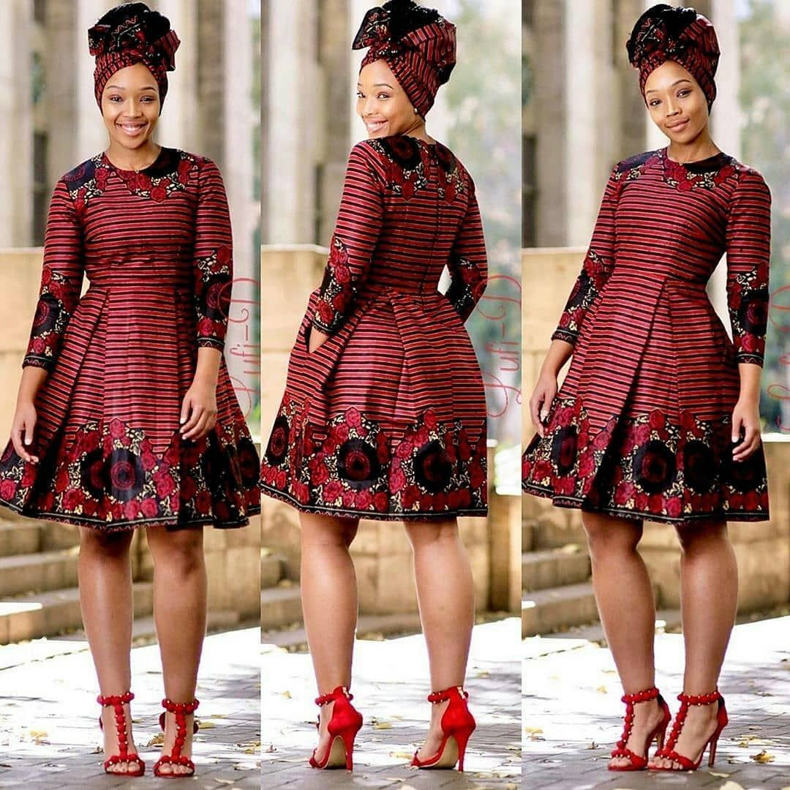
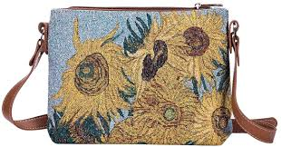
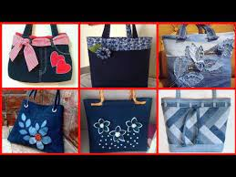
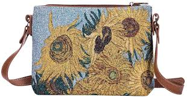
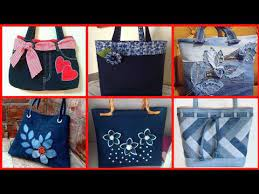

To make cheap and easily available clothes,the materials and the fabrics used to make the clothing need to be cheap too.
Here are some samples of dresses:



Heavyweight material. The higher the GSM (Grams per Square Meter), the more durable and long lasting the fabric will be. ...

 


